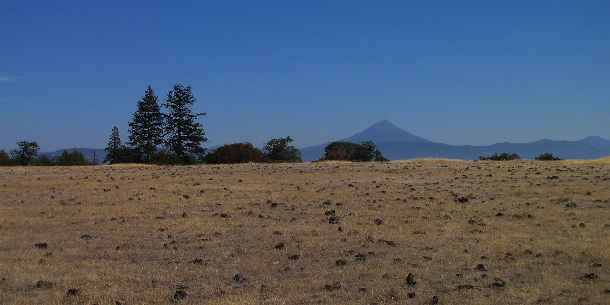

Fire-resistant planting for the Rogue Valley
No plant is fireproof. The right plants, spaced and watered well, burn slower and give firefighters a better chance.

What makes a plant fire-resistant
- Moist, supple leaves that don’t dry out in August
- Low sap and resin content
- Little dead wood, twigs or leaf litter building up inside
- Low growth that doesn’t form a ladder to trees or eaves
What to pull first
Dense, resinous shrubs and anything with dry, dead material inside, especially within five feet of the house.
Local plant list
[HORTICULTURIST’S PLANT LIST: species, size, water needs and which local nurseries stock each one.]